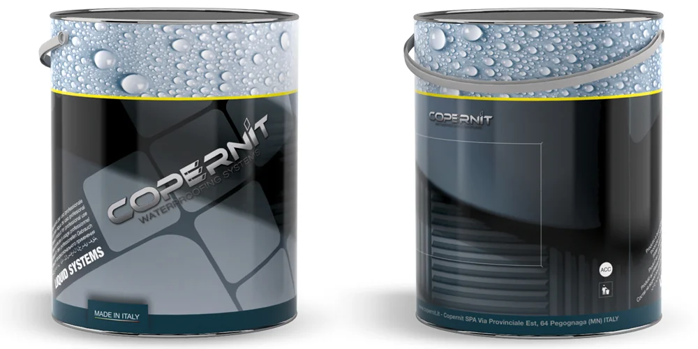
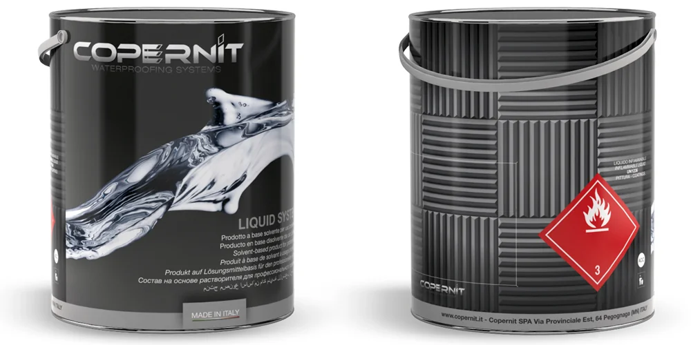

Coperlastic Plus
Base acqua
Membrana liquida multifunzionale a base acqua, con bitumi modificati con polimeri e filler. Una volta essiccata offre elevata elasticità, ottima adesione e buona tenuta anche in presenza di ristagni d'acqua.
Copernit produce membrane bitume-polimero per l'impermeabilizzazione a Pegognaga (MN).
Membrane liquide bitume-polimero per preparazione del supporto e impermeabilizzazione a freddo.
Base acqua
Membrana liquida multifunzionale a base acqua, con bitumi modificati con polimeri e filler. Una volta essiccata offre elevata elasticità, ottima adesione e buona tenuta anche in presenza di ristagni d'acqua.

Base solvente
Membrana liquida monocomponente poliuretano-bituminosa al solvente, resistente alla pioggia in tempi brevi e senza bisogno di primer. Si applica su profili complessi e diversi substrati.

Base acqua
Membrana liquida elastomero-bituminosa monocomponente e tixotropica, in emulsione acquosa pronta all'uso. Una volta essiccata è elastica, ben adesa al supporto e resistente ai ristagni d'acqua.

Base solvente
Membrana liquida elastomero-bituminosa al solvente, pronta all'uso e applicabile a freddo. Essicca più rapidamente delle emulsioni, con buona resistenza all'acqua stagnante anche in inverno.